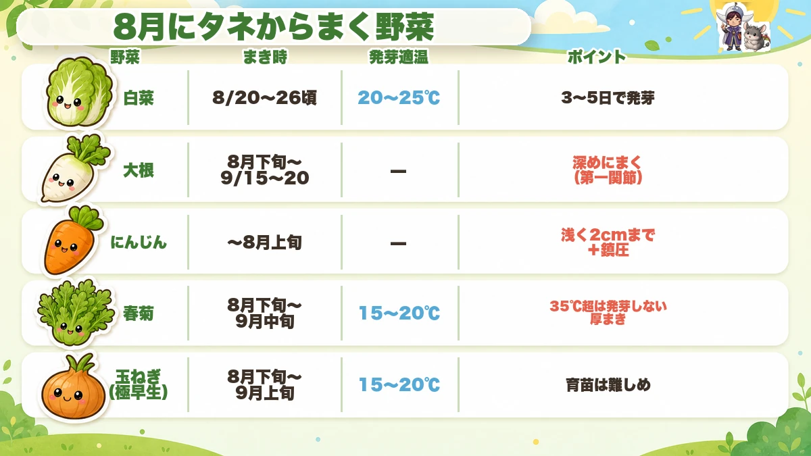
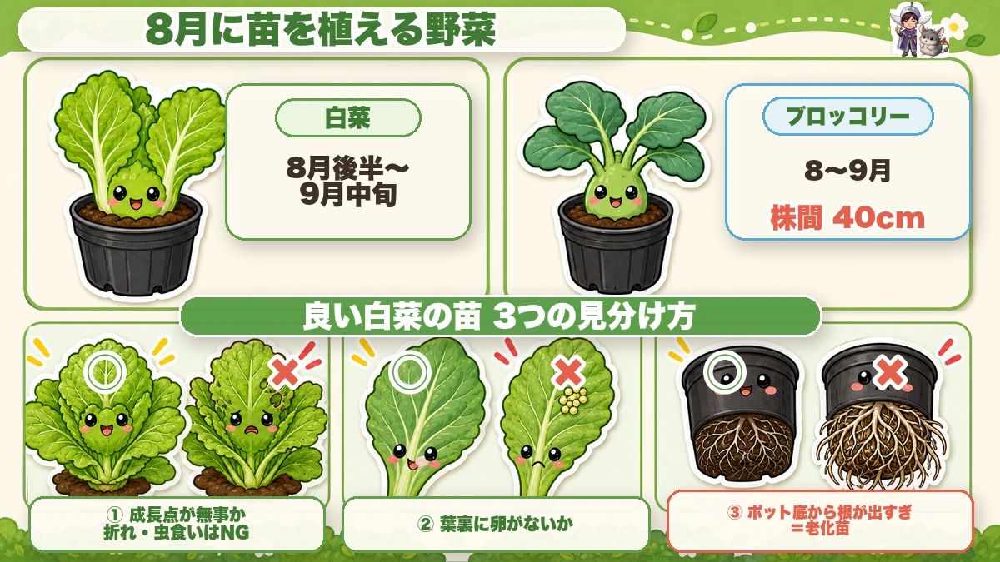
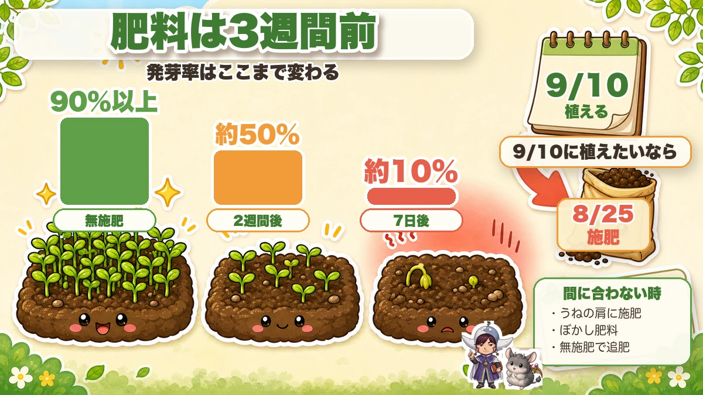

August decides the winter 🌱 Sowing and planting in the heat
🗨️ "August is too hot to do anything."
🗨️ "When do the winter crops start?"
🗨️ "I sowed last year and nothing came up."
Hello, I'm Eiko. Eight years of growing vegetables organically and without pesticides, and a teaching licence in science.
The point, up front:
August isn't a month off. It's the month the winter crops are decided.
A week or two of slippage now changes what's on the table in December. And there's nothing to be daunted by — the whole job is writing two dates in a calendar ☺️
Sowing from seed

What this diagram says （図解の文字）
- What to sow from seed in August — crop / when / germination temperature / key point
- Chinese cabbage — around the third week — 20–25 °C — up in 3–5 days
- Mooli — late August into mid September — sow deep, to the first finger joint
- Carrots — to early August — shallow, under 2 cm, and firm
- Chrysanthemum greens — late August into mid September — 15–2…
Chinese cabbage
The centrepiece of the winter garden. Germinates at 20–25 °C, up in 3–5 days, ready to plant out in 15–20 days.
And one important method point: don't sow direct at this time of year. Sow into modules. Three reasons — you can keep them in cool part shade, you can control the watering, and small seedlings are less exposed to insects. Direct-sown in high summer, a lot of them germinate and then scorch or get eaten.
- Tray choice — plant out promptly? Small cells. Only free at weekends? Larger cells or pots, so they can wait to 3–4 true leaves
- Sowing — 2–3 seeds per cell, about 5 mm of covering. Don't press hard
- Where — part shade, out of the rain, and stand the tray up on a crate so air passes underneath and the compost stays cooler. It improves germination
Choose an early variety, and for no-spray growing a mini type is much easier — a shorter season means a shorter window of exposure.
Mooli
Finish sowing by the middle of early autumn. Rows 60 cm apart, stations 30 cm, three seeds each.
The key is depth: mooli seed dislikes light, so sow to about the first joint of your index finger. Too shallow and germination is uneven. Up in 3–4 days.
Short of space? 20 cm spacing is fine. The roots are smaller, and easier to handle and to fit in a fridge. You don't have to grow big ones.
Carrots
The summer sowing is the main one — thicker, sturdier roots than a spring sowing, and they can stay in the ground into late winter.
Germination is 90% of the job. Seed needs light, so sow shallow — under 2 cm — and firm well. It takes two weeks, so not drying out is everything.
And a warning about pelleted seed: in dry summer conditions the coating doesn't always break down, and the seed fails. At this time of year, naked seed sown one at a time is more reliable.
Chrysanthemum greens
15–20 °C to germinate, and above 35 °C the rate collapses — so in a hot year, wait until early autumn.
Germination is about 50% anyway, so sow thickly — 1 cm spacing in rows 20 cm apart. It needs light, so the covering is minimal, which means it dries easily — so firm it down hard.
Planting from bought plants

What this diagram says （図解の文字）
- What to plant as plants in August
- Chinese cabbage — late August into mid September ／ broccoli — 40 cm spacing
- Three ways to spot a good Chinese cabbage plant
- ① is the growing point intact? Broken or chewed is a no
- ② any eggs on the leaf undersides?
- ③ roots coming out of the base of the pot = an old plant
Three checks before you buy:
- Is the growing point intact? Broken or chewed and the plant has no future
- Any eggs on the undersides of the leaves?
- Roots pushing out of the bottom of the pot? That's an overgrown plant that will be slow to establish
Preparing the soil — and the three-week rule

What this diagram says （図解の文字）
- Fertiliser goes in three weeks ahead
- How much germination changes — over 90% with no fertiliser ／ about 50% two weeks after ／ about 10% seven days after
- To plant on a given day, feed three weeks before
- If there isn't time — feed the shoulders of the bed ／ use bokashi ／ don't feed, and top-dress later
The figures are startling:
- No fertiliser — over 90% germination
- Two weeks after feeding — about 50%
- Seven days after feeding — about 10%
Decomposition gives off heat and gas, and seed sitting in it fails.
So count back three weeks from your planting date and feed then.
And if you've run out of time, three ways round it:
- feed only the shoulders of the bed, away from where seed goes
- use a bokashi feed, which is already part-decomposed
- don't feed at all and top-dress once the crop is growing
Five tricks for sowing in heat
- Sow into modules and keep them in cool part shade
- Stand trays up off the ground so air moves underneath
- Water in the early morning or the evening, never midday
- Lay fleece or shade net over direct sowings and water through it
- Sow around rain where you can
The science: why both too early and too late fail 🔬
The winter brassicas sit inside a narrow window with a failure mode at each end.
Too early: soil temperature is above the germination range, so seed doesn't come up at all; and anything that does meets the full insect population at its smallest and most vulnerable.
Too late: the plant can't build enough leaves before it cools — and a heading crop builds its head out of leaves it made while it was warm. Short of them, it never hearts.
So the window isn't a preference. It's bounded by soil temperature on one side and by daylight and warmth on the other ☺️
To sum up
- ✅ August decides the winter crops
- ✅ Sow into modules, not direct, and keep them in cool shade
- ✅ Chinese cabbage: 20–25 °C, up in 3–5 days, plant out in 15–20
- ✅ Mooli: sow deep, to the first finger joint
- ✅ Carrots: shallow, firmed, and never allowed to dry
- ✅ Naked seed beats pelleted in dry heat
- ✅ Chrysanthemum greens: sow thickly, cover thinly, firm hard
- ✅ Check plants for growing point, eggs, and roots out of the pot
- ✅ Feed three weeks before planting — seven days before drops germination to about 10%
- ✅ No time? Feed the shoulders, use bokashi, or top-dress later
- ✅ Too early fails on soil temperature; too late fails on leaf count
You don't have to do all of it. Open a calendar and write two dates: "feed" and, three weeks later, "plant". That's August 🌱
Thank you for reading!